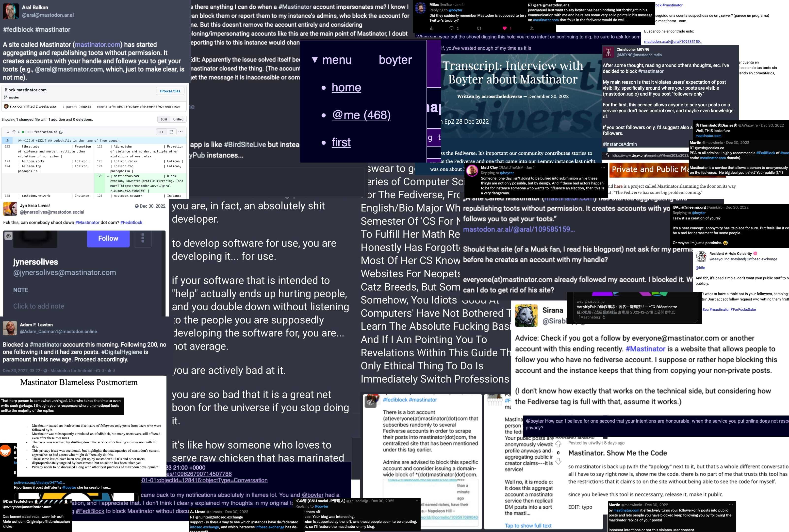

Use Go to annoy the fediverse
How to make 9 million people VERY angry
Who are you?
"Officially" technical lead/principle at Kablamo but a "code monkey" at heart.
func produce(c Coffee, b Beer) (Code, Cloud, error)
I blog boyter.org I free software github/boyter/ I run searchcode.com also on the twitter @boyter activitypub @boyter@honk.boyter.org
Trigger Warning
- I was never out to hurt anyone
- I am actually really excited by ActivityPub
- I have been at least aware of it for years
Fediverse?
- You know twitter?
- You know mastodon?
- ActivityPub!
MailMastinator
- No sign up, no login, totally public
- Accepts every possible address you can think of.
- No accounts... it just accepts
emailmessages - Insecure by default! Reasonable anonymity, but no privacy
- Trillions and trillions and trillions of accounts
Deterministic Keys
func GetKeys(username string, primes []int) (string, string) {
hsh := fnv.New64()
_, err := hsh.Write([]byte(username))
if err != nil {
return "", ""
}
pubKey, priKey, _ := GenerateKey(int(hsh.Sum64()), primes)
return pubKey, priKey
}
// GenerateKey Given a specific input returns a deterministic RSA key
func GenerateKey(seed int, primes []int) (string, string, error) {
k, err := rsa.GenerateKey(NewDeterministicReader(seed, primes), 2048)
if err != nil {
return "", "", err
}
pubkey, err := EncodeKey(&k.PublicKey)
if err != nil {
return "", "", err
}
seckey, err := EncodeKey(k)
if err != nil {
return "", "", err
}
return pubkey, seckey, nil
}
Deterministic Keys
type Reader struct {
rnd *rand.Rand
primes []int
}
func NewDeterministicReader(seed int, primes []int) *Reader {
rnd := rand.New(rand.NewSource(int64(seed)))
return &Reader{rnd, primes}
}
func (r *Reader) Read(p []byte) (n int, err error) {
i := 0
b := p
if len(p) == 1 {
// fmt.Println("maybeReadRand")
return 1, nil
}
for i < len(b) {
if len(b) < 4 {
b[0] = 7
b = b[1:]
} else {
binary.LittleEndian.PutUint32(b, uint32(r.primes[r.rnd.Intn(len(r.primes))]))
b = b[4:]
}
}
return len(p), nil
}
Reaction
Reaction 2
the ethical thing to do is to go take your computer, make sure to pop open every single case, plug them in so you can make sure everything gets nice and fried, then give them all a long, long, long shower.
GOPATH + Monorepo
Exploit GOPATH for multiple entry points into application.
.
├── assets
│ ├── imageproxy
│ │ └── main.go
│ ├── load
│ │ └── main.go
│ ├── merge
│ │ ├── audio
│ │ │ └── main.go
│ │ ├── bulk
│ │ │ └── main.go
│ │ ├── cleanup
│ │ │ └── main.go
│ │ ├── oldvideo
│ │ │ └── main.go
│ │ ├── photo
│ │ │ └── main.go
│ │ ├── video
│ │ │ └── main.go
│ │ └── wvideo
│ │ └── main.go
│ ├── transcodeFinished
│ │ └── commandline
│ │ └── main.go
│ └── transcodeStart
│ └── commandline
│ └── main.go
Background Jobs
- Load. Taxonomy. Graceful degrade. Restore.
- Merge's.
- Transcode Start/End.
- Image Resize, watermark.
- Many one off jobs.
- Lambda?
- Go memory usage a massive win.
Go for S3 copy
Excellent with SQS support. But have to code own multipart.
for _, sqsmsg := range messages.Messages {
// We don't want to wait for these to finish anymore but let them run in the background
// and finish whenever they are done and naturally exit. As such no need for a waitgroup
// here anymore
go func(sqsmsg *sqs.Message) {
Go Image Resizing
- Don't do it at runtime
- Too slow! Watermarking.
- Moved to pre-generating and storing.
- API passes images though. Logging.
- Thumbor is pretty good
Clipping

- mediainfo, ffmpeg (mxf, mov, mp4).
- Disk caching/issue.
- 2 random eviction (woo!)
- AWS Transcode? Speed/Cost.
Clipping In Action
Network bound. T3 burstable network really helps!!

Glacier
Annoying when many can request. Store in DB and on event update all matches. Expire after 24 hours. Hard to predict expiration.
Really Helpful
Have an endpoint that exposes most environment variables.
{
"environment": {
"AppEnvironment": "PROD",
"AudioMasterBucket": "archives.master.audio",
"AudioProxyBucket": "archives.proxy.audio",
"AwsRegion": "ap-southeast-2",
"DownloadExpiryMinutes": 1440,
"ElasticEndpoint": "https://elastic-archives.content/",
"FrontendEndpoint": "https://archive.content",
"HttpTimeoutSeconds": 20,
"LandingBucket": "archives.landing",
"MetadataBucket": "archives.records.prod",
"PhotoBucket": "archives.photo",
"PhotoBucketProxy": "archives.proxy.photo",
"PortNumber": 8080,
"SystemEnvironment": "Archive",
"SystemEnvironmentDisplayName": "Archive",
"UploadExpiryMinutes": 1440,
"VideoMasterBucket": "archives.master.video",
"VideoProxyBucket": "archives.proxy.video"
}
}What would we change?
AWS Changes, Fargate (CPU), Private API-Gateway, Server-less Aurora, Bucket cleaning, Instance types R5
Taxonomy storage.
Probably more lambda. 15 min timeout.
S3 key names. Maybe GORM. Proxy!
Results

- Outages 0. Previously days/weeks.
- 976 audio master retrievals
- 4,008 video master retrievals. Glacier.
- 16,014 audio proxies played
- 157,281 video proxies played (28,469 in May)
- 593,085 searches performed
- Average search time ~100 ms
GA Jan. Culture change.
Results Continued
- 3 months to production cut-over. Turn off.
- 132 TB data though API (so far)
- 1 PB of video data in S3 / Glacier
- 40 TB of audio data in S3
- 16,000 images
- ~327 days of video watching
- Some joker... 60x700 GB videos in one hour.
- Importing other systems.
- On time + budget!
Thank You!
Presentation located at https://boyter.org/static/golang-syd-25th-may/ or just go to boyter.org and I will link it up tomorrow.